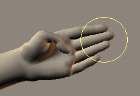
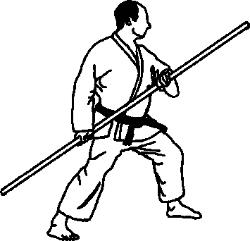
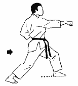
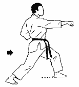
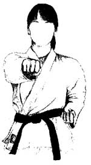
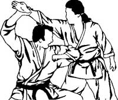
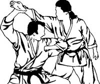
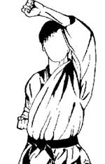
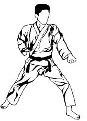
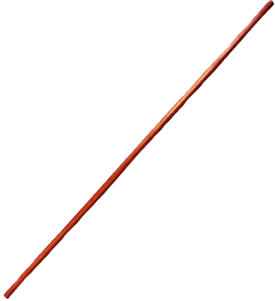

Le mot KARATE se compose de "KARA" -Vide- et "TE" -Main-
Le Karaté est l'art de la main vide : c'est une méthode scientifique et rationnelle consistant à utiliser les armes naturelles du corps pour porter
des coups frappés...
Historique
Le karaté contrairement à une idée fort répandue, n'est pas né au japon mais à Okinawa,
une île située entre Formose et le Japon, au sein de ce qui constitue l'archipel des Ryu Kyu. Proche également de la Chine du Sud, elle est restée
longtemps influencée par le civilisation chinoise. Par sa situation géographique, au carrefour de l'asie du sud-est, Okinawa ne pouvait manquer de
profiter du brassage des techniques en vigueur dans les contrées avec lesquelles les Okinawaiens commerçeaient comme la corée, la thailande, la chine,
lz vietnam...Ainsi se développa petit à petit le "TO-De", la "main de chine".Mais ce n'est qu'aprés lorsque des samourai vaincus du clan satsamu débarquérent
sur l'île pour tenter de soumettre la population que le "TO-de" devient allait devenir un moyen de défense qui allait se propager comme la poudre chez les
habitants d'Okinawa.
Les Japonais ayant interdit le port de toute arme, les paysans relevérent le défi en faisant de leur corps et des ustensiles agraires à leur disposition des
armes susceptibles de percer la carapace d'une armure ou de rompre la lame acérée d'un katana(sabre japonais).
Cet enseignement de maître à disciple allait se perpétuer dans le plus grand secret pour ne pas éveiller la curiosité des ennvahisseurs jusqu'à la fin
du 19e siécle.Les plus grand maître à cette époque étaient considérés comme des "Meijin", c-à-d des être aux capacités sur humaines.
On peut citer les noms de: Higashiona ou de Iotsu, principaux dépositaires du fabuleux héritage d'Okinawa tel qu'il leur était parvenu et tel qu'ils l'ont transmis à
leurs disciples Myagi, Mabuni,Funakoshi. C'est Gichin Funakoshi qui introduisit le "Té" au Japon dans les année 20. Le "Té" allait-être profondémment remanié par les
japonais, sous l'influence des principaux éléves de Maître Funakoshi et contrairement aux souhaits du vieux Maître. L'ideogramme Kara-té-Do faisait son apparition
dans les année trente. La "voie de lamain vide" remplacait la main de chine". Sur la forme le changement était imperceptible.
Mais sur le fond une page était définitivement
tournée. Le Karaté, sous l'influence des japonais, allait déferler comme le judo partout dans le monde dans sa version sportive tandis que quelques "irrecductibles" de
"l'okinawa-Té" continuaient de perpétuer contre vents et marrées, l'honorable tradition...
dimension philosophique
Le karaté mène à la non violence, si l'on suit correctement son enseignement. Gishin Funakoshi, fondateur de l'école shotokan en a fait toute sa vie un cheval
de bataille. Les plus grands Maîtres d'autrefois étaient tous, sans exception, des gens charmants qui plaçaient comme vertus cardinal de leur art l'humilité,
la discrétion et l'honnêté morale. Dans le karaté, l'adepte poursuit un but qui peut prendre toute une vie. Il n'a qu'un seul ennemi: lui même.
C'est la premiére notion que devrait inculquer le professeur à ses éléves.
Le karaté ne peut jamais servir à attaquer personne où alors il est dévoyé. En ce sens, il n'y a pas de technique offensive en karaté. "kara" signifie "vide", c-à-d
détaché, serein.
Voilà ce vers quoi tend toute la pratique du karaté. Elle contribue à éclairer le sens de la vie.
Les styles
On dénombre aujourd'hui un nombre assez considérable de styles en karaté qui font tous plus ou moins référence à la tradition. Autrement dit, à Okinawa.
- AO DENKOU KAI
- Fondé par Rick Clark
Utilisant des techniques provenant du Karate Kempo, Taekwondo, Judo et du Jujitsu, ce style, orienté self défense, privilégie dans sa pratique
l'étude des points vitaux.
- KARATE NANBUDO
-
Fondé par Yoshinao Nanbu
La voie (DO) martiale(BU) de Nanbu (NANBU)
Art martial traditionnel, le Nanbudo enseigne des techniques de Randoris (combats) à deux adversaires ou plus, d'esquives,
de katas ainsi que des exercices respiratoires et d'assouplissement. Discipline de non-violence cherchant avant tout à dissuader
et à neutraliser l'agressivité de l'adversaire,
elle s'appuie sur la simplicité et le naturel des gestes : pas de contacts brutaux, ni de mouvements en force, ni de torsions.
- KARATE CHITO RYU
- Fondé par Tsuyoshi Chitose
L'école de Chito ou encore l'école de la Chine (TO) millénaire (CHI)
Style okinawien -Shurite- de Karaté, privilégiant les positions hautes, il intégre des coups de pied et de poing, mais aussi des projections,
des prises et des techniques de self défense,
tout en gardant comme objectif premier la bonne santé du pratiquant.
- KARATE KYOKUSHINKAI
- Fondé par Sosai Masutatsu Oyama
Le lieu (Kai) de l'Ultime (Kyoku) Vérité (Shin)
Ce style a la réputation d'être la forme "dure" du Karaté. Les combats se déroulent au KO. La casse et l'endurance servent aux éleves à se tester ;
mais les kihon et kata restent les outils de base du pratiquant.
Et d'autres style comme le ASHIHARA RYU, BU-JUTSU RYU, DOSHINKAN, ENSHINKAI-RYU, KARATE GENBUKAI
Fondé par Tsuneyoshi Ogura
Créé à partir de plusieurs écoles japonaises et chinoises, ce style posséde des techniques à mains nues et des techniques avec armes;
GOJU RYU, SHITO RYU, SHORIN RYU, YUUSHINKAI,...
principe fondamentaux
l'apprentissage correct du karaté doit être conduit sur la base d'une approche à la fois physiologique et mentale. pour être en mesure de donner un coup de pied et un
coup de poing avec le maximum de puissance requise, dans n'importe quelle position et sans se faire surprendre, il faut que l'esprit et le corps marchent ensemble
, que les mouvements soient harmonieux, reflet d'une attitude mentale parfaitement sereine.
- Equilibre et centre de gravité
coup éfficace= stabilité et équilibre; un bon enracinement au sol permet d'augmenter la puissance d'un blocage, par exemple, tandis que
sans équilibre, il est impossible de justifier un point d'appuit suffisant pour l'exécution d'un coup de pied...
le karaté est la voie du juste milieu. Ni trop, ni...trop peu. Une position juste détermine une action juste. Il ne faut pas forcer les positions mais rechercher
la meilleur adéquation entre mouvement dynamique et stabilité en veillant à garder le centre de gravité le plus bas possible.
- Rapidité d'exécution
Certains styles se sont fourvoyés en mettant l'accent sur le développement de la puissance au détriment de la rapidité d'execution. Or la puissance n'est pas
l'alliée de la vitesse. C là l'un des ensignements majeurs de certains Katas. Il faut chercher un compromis entre les deux. N'oublier pas que l'éfficacité de l'impact
dépend surtout de votre précision. En karaté les gestes doivent être vifs comme l'éclair mais précis comme le bistouri du chururgien.
- Concentration et contrôle
la concentration et le controle de ses actions conférent au karateka la véritable maîtrise, à savoir : la mobilisation de toutes les capacités physiques et mentales de l'être
humain. Voilà pourquoi il est possible, pour un expert de terrasser un adverssaire potentiel sur un seul et unique coup. Mais dans ce même principe est aussi contenue la finalité
du karaté : Vaincre sans combattre, par un esprit fort, fruit d'une authentique maîtrise de soi.
- Rôle des hanches et du Hara
En karaté, comme dans tous les arts martiaux, la force vient du ventre, du hara, ce point situé à 3cm du nombril. C en fait là que se trouve le centre de gravité.
si le pratiquant est capable de descendre son énergie, le ki, dans cet endroit du corps et si la position de son corps dans l'application des techniques est correcte,
il en résultera des actions tranchantes. les membres ne seront que la transmission de cette énergie profonde.
les armes naturelles du corps humain
les mains
- seiken

- teitsu

- uraken

- ippon-ken

- Keiko

- shuto

- haito

- haishu

- empi

- kakuto

- Enhon nukite

- etc...
les pieds
les postures
Une bonne position c'est comme la fondation d'une maison. sans fondation celle-ci n'est pas solide. Une bonne garde est ainsi fonction d'une bonne posture,
permettra d'autant mieux d'attaquer ou de défendre dans les meilleures conditions.
- Yoi
- signifie "prêt" en japonais; marque l'esprit de décision et de la vigilance.
- heisoku dachi
- pong fermés et placés devant chaque coté du corps; position d'attente du katas; les pieds sont joins; les mains ouvertes placées sur les cuisses.
- Musubi dachi
- même position mais les orteils tournés vers l'extérieur.
- Zenkutsu-dachi

- kokutsu dachi

- Nekoashi dachi

- Fùdo dashi

Etc....gif)
principales techniques de poing
- les attaques de poings
oi-zuki
 gyaku-zuki

gyaku-zuki

choku-zuki

shuto-uchi
 empi-uchi

empi-uchi

Etc....gif)
- les blocages
age-uke

gedan barai

soto uke
 uchi uke
uchi uke
 shuto uke
shuto uke

moroto uke

Etc....gif)
principales techniques de pied
maegeri
 Mawashi Geri
Mawashi Geri
 Yoko Geri
Yoko Geri
 yoko-tobi geri
yoko-tobi geri

ushiro geri
 Etc...
Etc....gif)
le kobudo
Puisque les armes leur avaient été confisquées autrefois à Okinawa par les envahisseurs japonais, avaient mis au point une technique de combat à mains nues,
le karate. Mais puisque c'étaient pour la plupart des paysans, ils se sont dits qu'ils pourraient, sans attirer l'oeil de leurs gardiens, se servir des instruments
agraires qu'ils avaient sous la main. C ainsi qu'est né un art parallèlement à la "voie de la main vide", le Kobudo.
En fait pour les géniaux paysans d'Okinawa, tout ce qui pouvait servir à se défendre contre les sabres et les lances japonais était bon à prendre!
les instruments agraires les plus connus:
- sai

- nunchaku

- Bô

- tonfa

- kama

le kiai
Le kiaÏ signifie "union des énergies" commun à tous les arts martiaux d'extrême orient, c'est un phénomène produit par un état d'union des "esprits", union
permettant le jaillisment de la force latente qui anime tout être vivant. En d'autres tremes, c la source de l'énergie, l'énergie d base qui pour jaillir doit être
dépouiller de toute entrave. Une pensée indécise, qui péderait le pour ou le contre avant de s'affirmer, gênerait d'autant la spontanéité et affaiblirait la force du
kiaÏ.
Le kiaÏ existe bien en dehors du karate. En fait nous l'utilisons tous les jours, sans nous en rendre compte. Lorsque nous sommes en colère ou bien au contraire
fous de joie. C la manifestation de l'être dans sa totalité...Le maître du karate, lui, cherche à rendre consciente cette énergie qui paraît illimitée et à la faire
passer au travers de sa technique. C le KIAI-JUTSU. Le mouvement ou le coup est accompagné d'un cri bref...Ce cri a pour effet de mobiliser toutes les énergies. C aussi
l'une des raisons pour lesquelles le contrôle s'impose. En karaté il faut être capable de dépasser la cible, de la traverser.
Par conséquent, de projeter son énergie.
To-Ate-Jutsu
C le plus haut niveau du karate, atteint seulement par quelques très grands maîtres. C experts sont capables de projeter leur énergie sans vous toucher.
Soit par un cri strident et bref (kensai) soit à un échelon encore, plus élevé, dans le silence complet...
les maîtres capables de ces choses n'aiment pas le faire publiquement ni en parler...Cela fait partie des véritables secrets du karate.
Quels sont les effets ressentis?
d'une part, accélération du rythme caediaque, béatitude. D'autre part, l'impression d'être jeté au sol, de tomber dans un grand vide. Chez un sujet sensible, cela
peut aller jusqu'à la syncope. Pourtant, ces mêmes aptitudes peuvent être aussi utilisées pour réanimer quelqu'un en syncope... C là l'un des sujets les plus passionnants
de l'étude du kiai.
Conclusion
Considérez cette page seulement comme une présentation du karaté. Il y'a des tas d'autres choses dont je pourrais parler à propos du karaté, comme les projections, les katas
bunkai, les grades, méditations, exercices spéciaux,...même cela n'aurait pas suffit à réellement connaître le karate.
ET comme disait les grands maître: "même 9 vies n'auraient pas suffit pour connaître la "voie de la main vide".